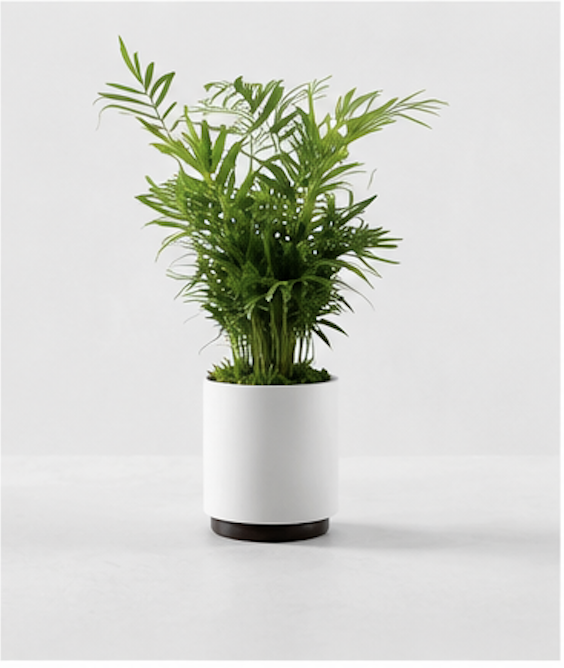
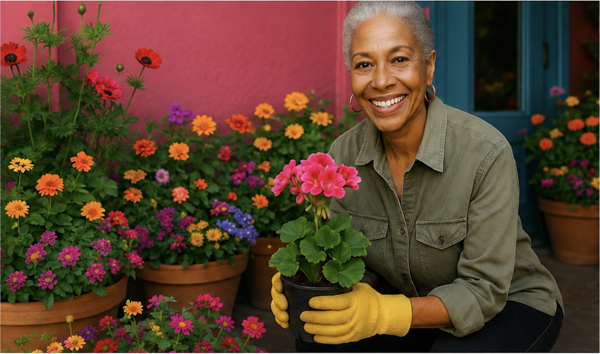
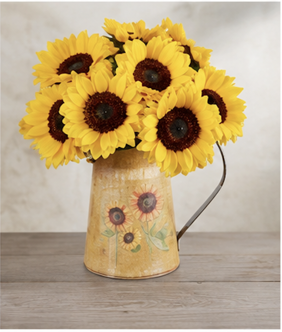
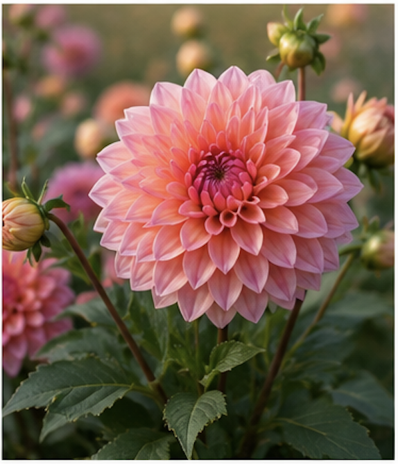
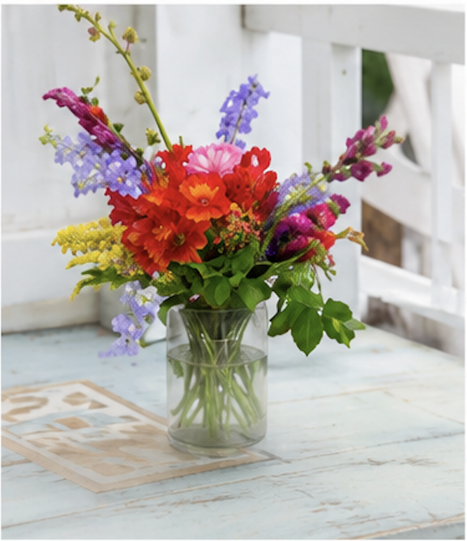

Red Rose Elegance
A dozen stunning red roses, hand-selected for freshness and beauty. Perfect for expressing love and appreciation.
Brightening San Francisco since 1995

Welcome to Fran's Flowers, San Francisco's trusted florist for nearly three decades. Founded in 1995, we pride ourselves on creating beautiful, fresh flower arrangements for every occasion. From weddings to everyday moments, we bring joy through flowers.

A dozen stunning red roses, hand-selected for freshness and beauty. Perfect for expressing love and appreciation.

Bright sunflowers, cheerful daisies, and vibrant roses create the perfect arrangement to brighten someone's day.

Soft white roses, pink peonies, and delicate eucalyptus come together in a romantic arrangement suitable for any celebration.

Celebrate spring with our exclusive arrangement featuring delicate cherry blossoms, soft pink roses, and fresh greenery. Each stem is carefully selected to bring the beauty of the season into your home.
✨ Only available March through May
"Fran's Flowers made my wedding day absolutely perfect. The floral arrangements were stunning, and the team was so helpful with every detail. I couldn't have asked for better!"
Wedding Client
"I've been sending flowers from Fran's for years. Every bouquet arrives fresh and beautiful. Their customer service is exceptional, and they really care about their work."
Local Customer
"I ordered flowers for my mother's birthday and she loved them! The arrangement was exactly as described, and the flowers lasted so long. Will definitely order again!"
Repeat Customer
123 Flower Street
San Francisco, CA 94102
(555) 123-4567
Monday - Friday: 9:00 AM - 6:00 PM
Saturday: 10:00 AM - 5:00 PM
Sunday: Closed
Email: info@fransflowers.com
Phone: (555) 123-4567
Orders: orders@fransflowers.com